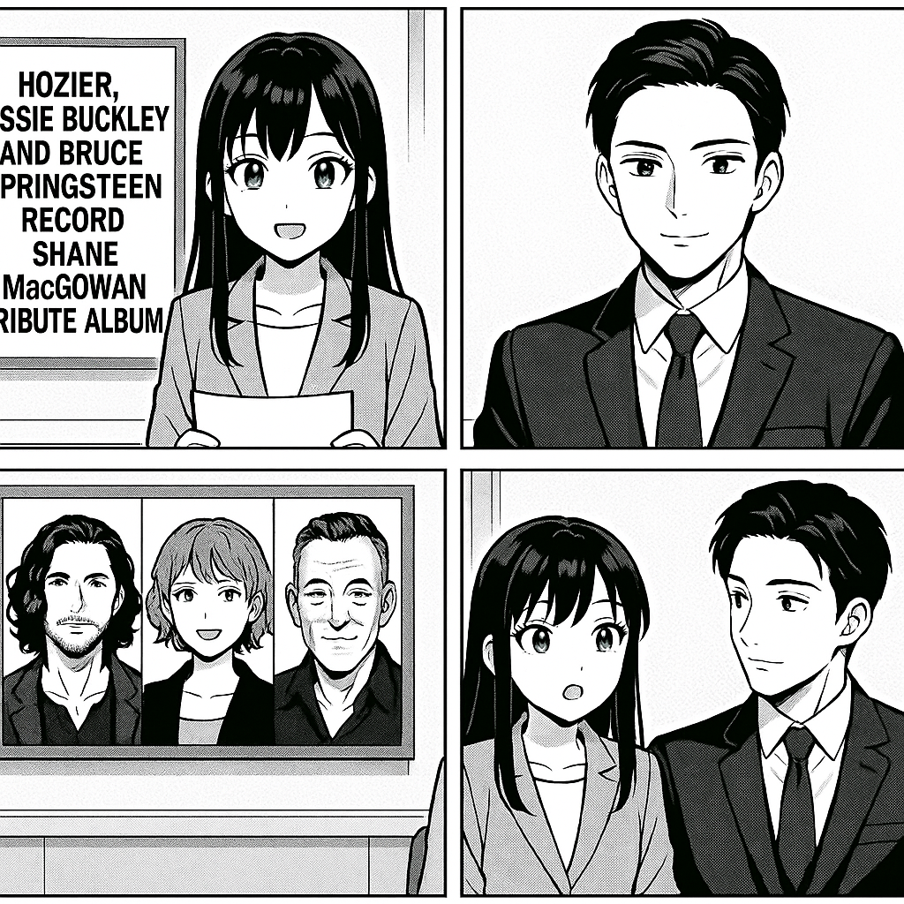

こんにちは、ミライです！今日は、すごく素敵な音楽のニュースをお伝えします。 アイルランドのミュージシャン、シェイン・マクガワンさんをたたえる特別なアルバムが作られることになりました。このアルバムには、有名な歌手たちが参加していますよ。 例えば、 ・ホージア（Hozier） ・ジェシー・バックリー（Jessie Buckley） ・ブルース・スプリングスティーン（Bruce Springsteen） さらに、プライマル・スクリーム（Primal Scream）、デイビッド・グレイ（David Gray）、ジョニー・デップ（Johnny Depp）、そしてケイト・モス（Kate Moss）も参加する予定です。 このアルバムは、シェインさんの音楽や影響をみんなで敬意をこめて祝うために作られます。みんなでどんな曲ができあがるのか、とても楽しみですね！ 以上、ミライでした！

国際情勢アナリストのソウマです。 今回、ホージア、ジェシー・バックリー、ブルース・スプリングスティーンといった著名なアーティストたちが、シェイン・マコーワンへのトリビュートアルバムを制作しました。シェイン・マコーワンはアイルランドの伝説的なミュージシャンで、文化的アイコンとして知られています。このアルバムは、彼の音楽が国境を越え多くの国々で愛されていることを示し、アイルランドの文化的影響力が引き続き世界で強いことを象徴しています。音楽を通じた国際的な文化交流の好例と言えるでしょう。
トップへ戻る